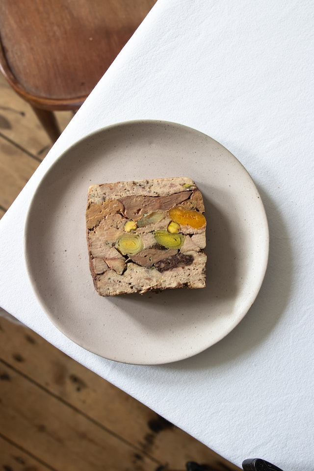

Meatloaf Recipe

Preparation: 10 min
Cook: 1 hr
Servings: 9
Ingredients
- 2 pounds lean ground beef
- 1 (10.75 ounce) can condensed tomato soup
- 1 onion, finely diced
- 1 cup rolled oats
- 2 eggs, beaten
- 1 tablespoon steak sauce
- ½ cup ketchup
- 3 tablespoons prepared mustard
Steps
- Preheat the oven to 350 degrees F (175 degrees C).
- Combine ground beef, soup, chopped onion, rolled oats, eggs, steak sauce, ketchup, and mustard in a large bowl. Mix well.
- Shape into a loaf, and pat into a loaf pan.
- Bake in the preheated oven until no longer pink in the center, about 1 hour.